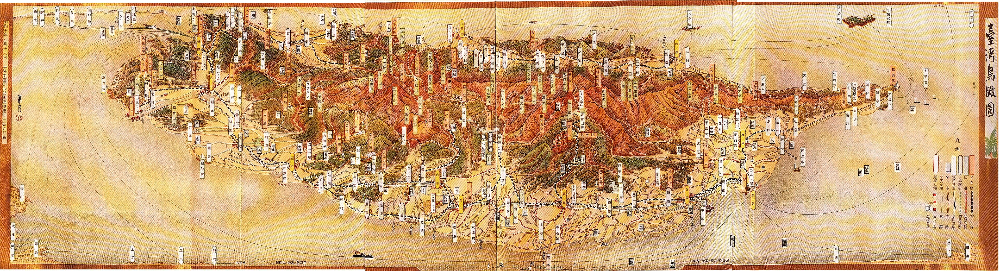
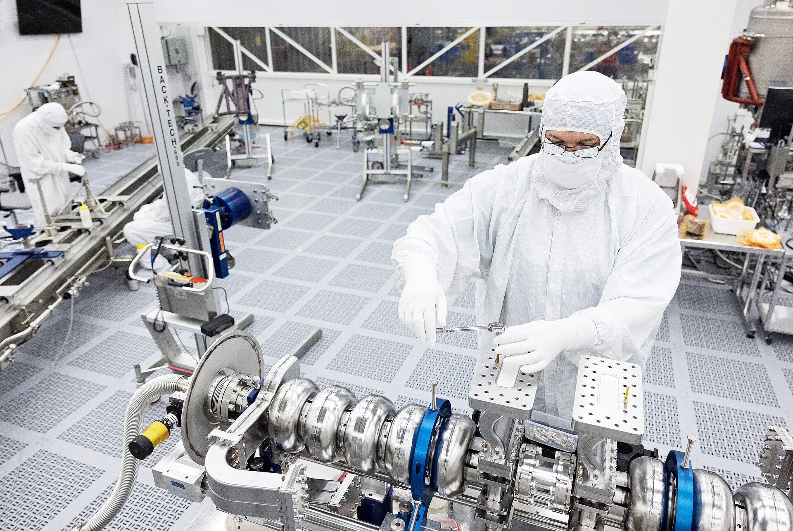
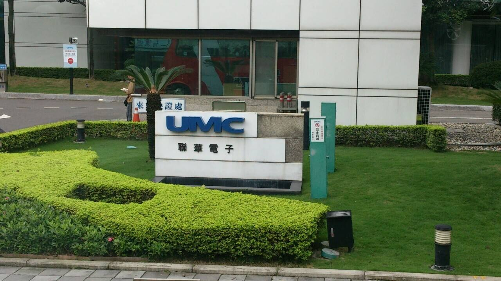
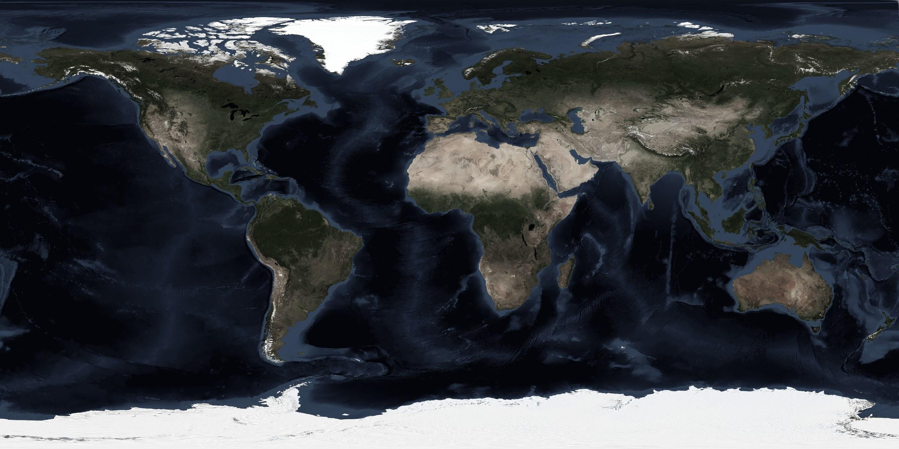
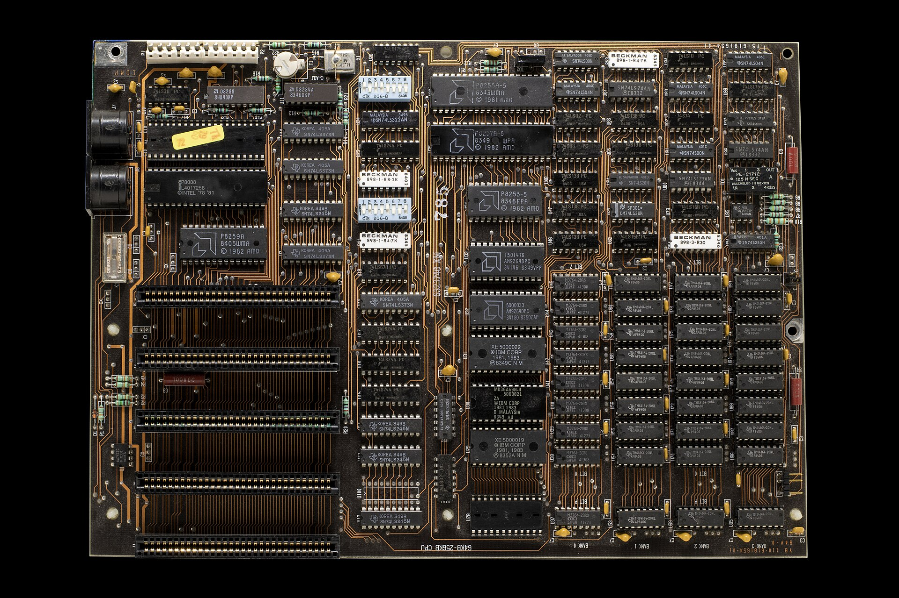
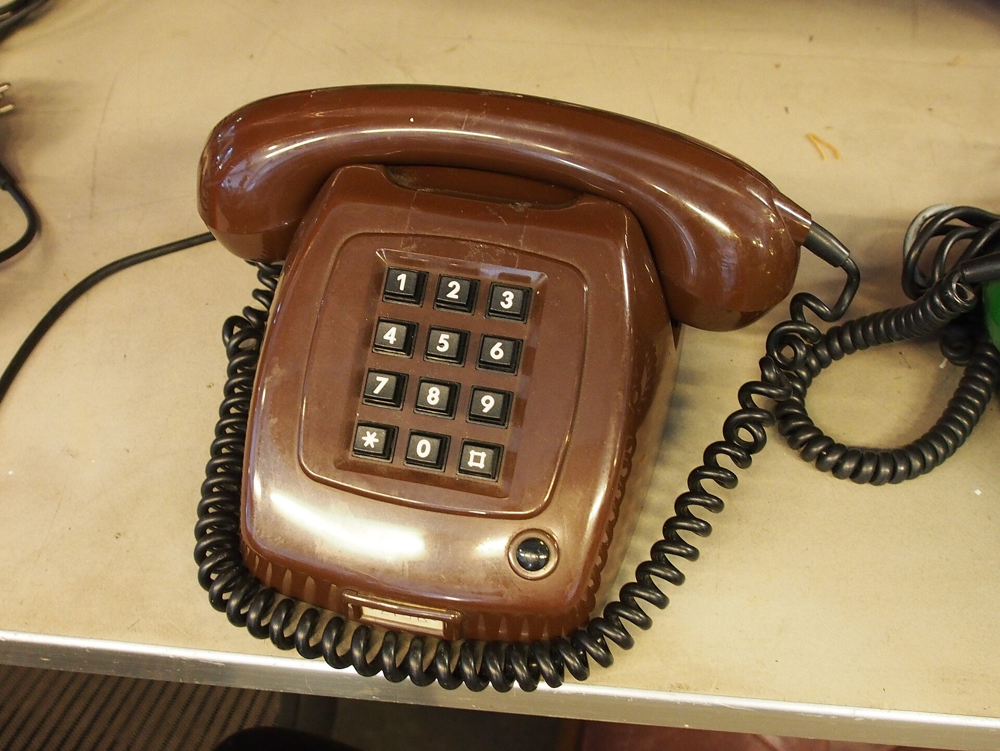
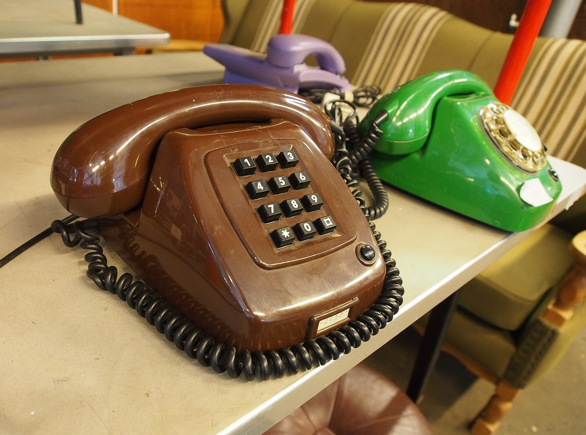
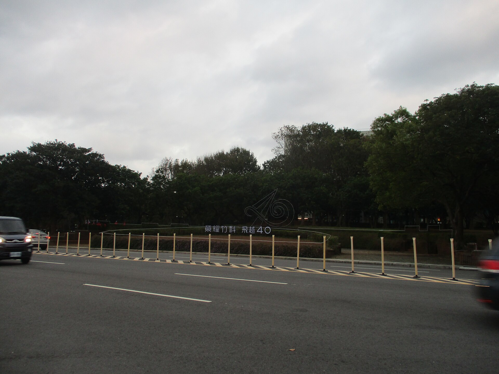
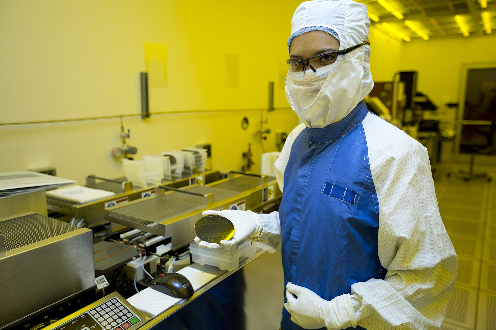

SEARCHING LESSONS · CHAPTER I · TAIWAN SEMICONDUCTOR ORIGINS
HSINCHU, TAIWAN · 24.80° N, 120.97° E


TAIWAN · REPUBLIC OF CHINA
HSINCHU FAB FLOOR
OUR STORY STARTS IN
1983
PROTAGONIST · UMC
ROBERT
TSAO
TSAO
“Tsao Hsing-cheng” — Executive at Taiwan's fledgling chipmaker
ROLE IN 1983: HIRED CEO
MAP: NATURAL EARTH / WIKIMEDIA COMMONS · PORTRAIT: VOA (PD)
CORPORATE DOSSIER · HSINCHU SCIENCE PARK
FILE NO. TW-1980-UMC

TAIWANESE SEMICONDUCTOR PIONEER
UNITED MICROELECTRONICS CORP.
Spun out of Taiwan's Industrial Technology Research Institute (ITRI) in Hsinchu.
ROBERT TSAO · THE CEO
A TAIWANESE
COMPANY
COMPANY
“…that a lot of people probably haven't heard of.”
IT'S CALLED
UMC
Taiwan's first commercial integrated-circuit chipmaker
PHOTO: WIKIMEDIA COMMONS (1980s SILICON WAFER)
INSIDE UMC · HSINCHU FABRICATION PLANT ("FAB") · 1983
PHOTOLITHOGRAPHY CLEANROOM

LOCATION · HSINCHU, 1983
WALKING AROUND HIS FACTORY FLOOR — “FAB”

SEMICONDUCTOR FAB LINE
THE TURNING POINT
A UNIQUE
INSIGHT
INSIGHT
Born on the Hsinchu factory floor in 1983
PHOTOS: WIKIMEDIA COMMONS · CLEANROOM ARCHIVE
THE 1983 THESIS · GLOBAL SEMICONDUCTOR SHIFT
UMC → MODERN FOUNDRY ERA
ROBERT TSAO'S 1983 REALIZATION
CHANGE THE FUTURE
IMPACT SCALE 01
OF THE
WORLD
WORLD


ONE UNIQUE INSIGHT
IMPACT SCALE 02
AND HIS
INDUSTRY
INDUSTRY
ACT I · THE 1982–1983 TELEPHONE BOOM
TAIWAN → UNITED STATES TRADE SURGE
JUST A YEAR EARLIER · 1982
TAIWAN'S EXPORTS OF TELEPHONES

TAIWAN FACTORIES
TO THE UNITED STATES

CONSUMER PUSH-BUTTON TELEPHONE (1982–83)
EXPORT VOLUME TRAJECTORY
WENT UP
DRASTICALLY ↑
DRASTICALLY ↑
MAP: NATURAL EARTH · PHOTO: WIKIMEDIA COMMONS
TAIWAN TELEPHONE EXPORTS TO THE U.S. · ANNUAL VOLUME (UNITS)
SOURCE: TAIWAN TELECOM EXPORT RECORDS (1982–1983)
TAIWAN TELEPHONE EXPORTS (1982 → 1983)
Annual shipment volume to the United States before and after deregulation
4M
4 MILLION UNITS A YEAR
IN JUST 12 MONTHS →
24 MILLION
UNITS / YEAR
24 MILLION UNITS
GROWTH MULTIPLIER
6X
INCREASE
IN LESS THAN 12 MONTHS
SANKET · REACTION
“THAT'S INSANE.”
INSIDE THE 1982 TELEPHONE · UMC SILICON SUPPLIER
DIAL-IC & SPEECH NETWORK CHIPS

24M EXPORT TELEPHONES
SUPPLIER · HSINCHU
UMC · THE CHIP COMPANY
MAKING CHIPS GOING INSIDE THOSE TELEPHONES
Every exported push-button phone needed a CMOS dialer integrated circuit.
FINANCIAL MILESTONE · 1982–1983
RECORD PROFITS
IN ITS FIRST FULL YEAR
YEAR 01 · BOOM
PHOTOS: WIKIMEDIA COMMONS (TELEPHONE & IC DIE MACRO)
THE WHIPLASH · 1983 MARKET COLLAPSE
SINGLE-PRODUCT EXPOSURE
QUICKLY AFTER THAT · LATE 1983
THE U.S. PHONE BOOM DIED AWAY
1. U.S. PHONE BOOM DIED AWAY ↓
2. UMC'S SALES ALSO DIED AWAY ↓
ACT II · DIAGNOSING THE SINGLE-PRODUCT TRAP
ROBERT TSAO'S FAB ECONOMICS
THE CEO REALIZED
AS A CHIP FACTORY: IT MADE NO SENSE
CHIP FACTORY
Millions of dollars in fixed cleanroom equipment
CONCENTRATION RISK
BETTING TOO MUCH OF YOUR FACTORY
ON ONE PRODUCT BEING CONTINUOUSLY SUCCESSFUL
JUST ONE PRODUCT
If U.S. telephone demand stalls, the entire fab sits idle.
THE FOUNDRY THESIS · MULTI-PRODUCT CHIP MANUFACTURING
1983 · BEFORE THE WORD "FOUNDRY" EXISTED
A CHIP FACTORY WOULD BE MORE SUCCESSFUL IF…
IT MADE CHIPS FOR ANY PRODUCT IN DEMAND
ONE SHARED FAB
UMC WAFER FAB
Manufactures for any designer
01 · PERSONAL COMPUTERS
DEMAND ↑
02 · TELECOMMUNICATIONS
DEMAND ↑
03 · CONSUMER ELECTRONICS
DEMAND ↑
04 · INDUSTRIAL & AUTO
DEMAND ↑
“Right now that sounds like a pretty obvious thing…”
BACK IN 1983:
A NOVEL CONCEPT
A NOVEL CONCEPT
1983 INDUSTRY REALITY
THERE WAS NO SUCH THING AS A
PURE-PLAY
CHIP FACTORY
CHIP FACTORY
OR A “FOUNDRY” AS WE KNOW TODAY
STRATEGIC PIVOT · REORIENTING UMC (1983)
ROBERT TSAO'S VISION

CONVICTION
TSAO COULD SEE THE FUTURE
“…truly believed that this was a good insight.”
CORPORATE TRANSFORMATION REQUIRED
REORIENT THE
WHOLE COMPANY
WHOLE COMPANY
OLD MODEL (1982)
SINGLE-PRODUCT CHIPMAKER
Tied to boom-and-bust U.S. telephone orders
→
NEW BUSINESS MODEL (1983 PROPOSAL)
PURE-PLAY FOUNDRY
Manufacture chips on contract for any product in demand
ACT III · CORPORATE GOVERNANCE AT UMC (1983)
HSINCHU SCIENCE PARK · BOARD OF DIRECTORS
CORPORATE HURDLE
ASK PERMISSION FROM HIS BOARD OF DIRECTORS
APPROVAL REQUIRED

HSINCHU SCIENCE PARK · EST. 1980–1982
UMC AT THIS POINT: A PRETTY NEW BUSINESS
ONLY ONE
YEAR OLD
YEAR OLD
LAUNCHED AS A PRIVATE COMPANY A YEAR AGO
PHOTO: WIKIMEDIA COMMONS (HSINCHU SCIENCE PARK)
EXECUTIVE AUTHORITY CHECK · ROBERT TSAO AT UMC
HIRED MANAGEMENT vs. BOARD OWNERSHIP
TSAO IS
JUST A CEO
JUST A CEO
Appointed executive manager — not the controlling shareholder
FOUNDING STATUS
NOT A FOUNDER
HIRED EXEC
EQUITY STAKE
NO BIG OWNERSHIP IN THE COMPANY
~0% CONTROL
THE CONSEQUENCE
CANNOT MAKE BIG DECISIONS
WITHOUT GETTING PERMISSION FROM THE BOARD
UMC BOARDROOM VOTE · HSINCHU, TAIWAN (1983)
PROPOSAL: PURE-PLAY FOUNDRY MODEL
LUCKILY · WHEN HE GOES TO THE BOARD
THEY'RE PRETTY EXCITED ABOUT THIS WHOLE IDEA
INITIAL BOARD VERDICT
YES
ALMOST ON THE SPOT
ACT IV · THE MYSTERIOUS U.S. ADVISOR (1983)
CLASSIFIED BOARD CONSULTANT DOSSIER
IDENTITY UNNAMED IN 1983 BRIEFING
HIGH-LEVEL CHIP EXECUTIVE
IN THE UNITED STATES
BOARD MEMBERS HAD BEEN GETTING ADVICE FROM HIM
STANDING IN 1983
THE MOST RESPECTED
CHINESE-AMERICAN
CHINESE-AMERICAN
GLOBAL REPUTATION
IN THE CHIP BUSINESS
IN THE WHOLE WORLD
IN THE WHOLE WORLD
THE U.S. ADVISOR'S EMPIRE · GLOBAL SEMICONDUCTOR OPERATIONS (1983)
TEXAS INSTRUMENTS / U.S. CHIP GIANT SCALE
MANAGING A TEAM OF
25,000
PEOPLE WORLDWIDE

MAKING CHIPS FOR ONE OF THE BIGGEST COMPANIES IN THE WORLD
SPREAD ACROSS THE WHOLE WORLD
GLOBAL CHIP MANUFACTURING NETWORK
ARCHIVE: 1980s U.S. SEMICONDUCTOR PRINT AD · NATURAL EARTH
SAM · SEARCHING LESSONS
“AND THIS IS WHEN HE HAS A UNIQUE INSIGHT.”
1982 EXPORT SURGE
“TAIWAN'S EXPORTS… WENT UP DRASTICALLY.”
6X IN 12 MONTHS
“THAT'S INSANE. THAT'S INSANE.”
UMC · YEAR 1
RECORD PROFITS IN ITS FIRST FULL YEAR
ROBERT TSAO'S REALIZATION
“THIS IS WHEN THE CEO REALIZED…”
HINDSIGHT vs. 1983
“SOUNDS LIKE A PRETTY OBVIOUS THING…”
NEXT STEP · THE BOARD
“BEFORE HE COULD DO THAT, HE HAD TO ASK PERMISSION…”
EXECUTIVE POSITION
“TSAO IS JUST A CEO — NOT A FOUNDER”
AT THE END OF THE MEETING
THEY END UP GIVING HIM ONE CONDITION
THE U.S. CHIP EXECUTIVE
MANAGING A TEAM OF 25,000 PEOPLE
GLOBAL SCALE · 1983
ONE OF THE BIGGEST COMPANIES IN THE WORLD